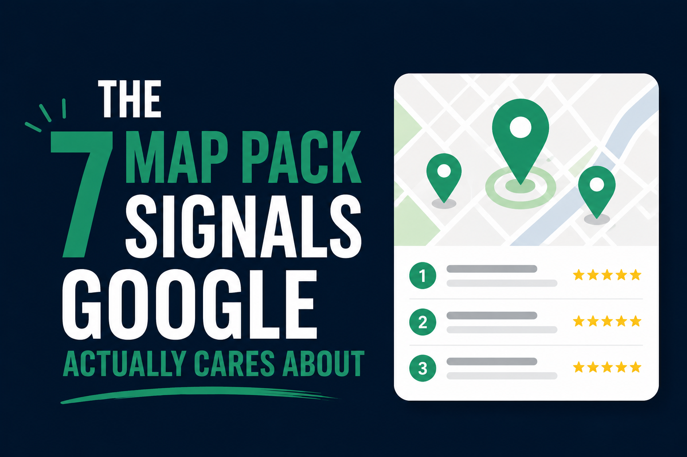
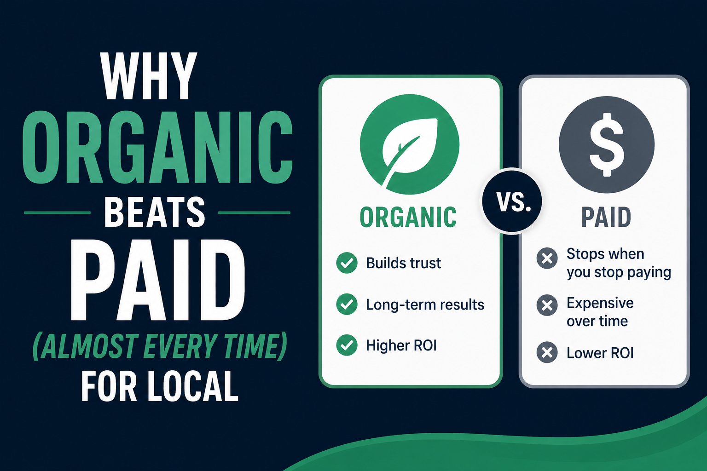
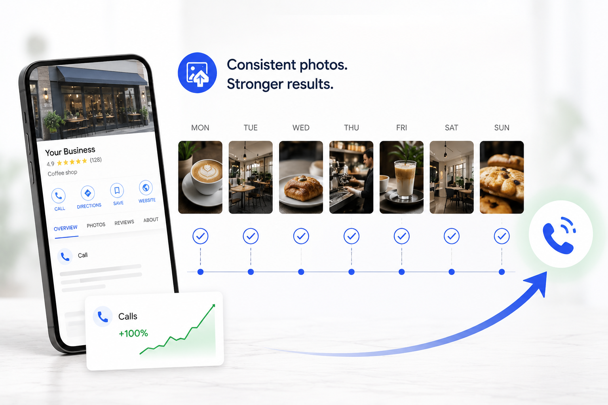
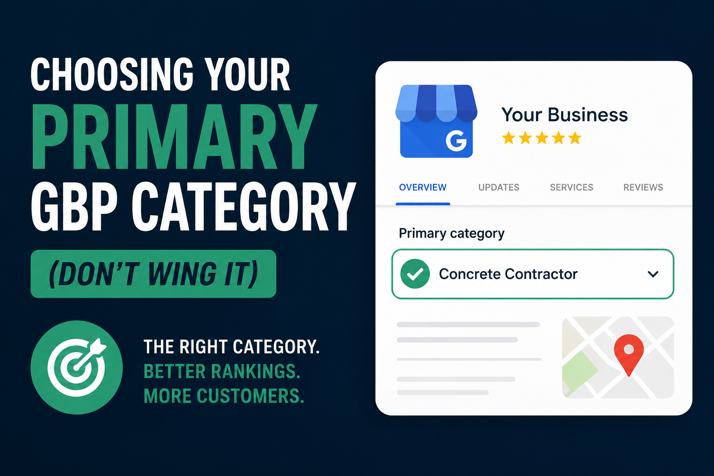
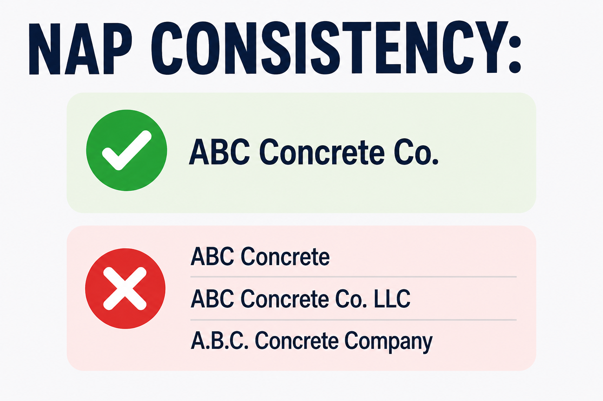

The 7 Map Pack Signals Google Actually Cares About
Forget the 200-factor checklists. These seven signals move the map pack needle for local businesses in 2026 — and how to dial each one in.
Read More →Practical, no-fluff insights on Google Business Profile, local SEO, and social media — written for the operators in the trenches, not the agencies in the boardroom. Start with our guides on GBP category strategy and NAP consistency.

Forget the 200-factor checklists. These seven signals move the map pack needle for local businesses in 2026 — and how to dial each one in.
Read More →The review-generation playbook we run for our top-performing clients. Two text messages, one QR code, zero awkwardness.
Read More →
The math behind the long game. We break down what $1,000 of ads vs. $1,000 of organic optimization actually returns over 24 months.
Read More →
Yes, photos move rankings. Here's the exact upload cadence, geo-tagging trick, and category mix we used for a real client case study.
Read More →
Your primary category is the single biggest ranking lever you have. Here's how to choose it strategically — with industry-specific picks.
Read More →
Name, Address, Phone — across hundreds of directories. Why it matters more than fancy tactics, and the free tools to audit yours.
Read More →One short, useful email per week. No spam, no funnels, just tactics that work.